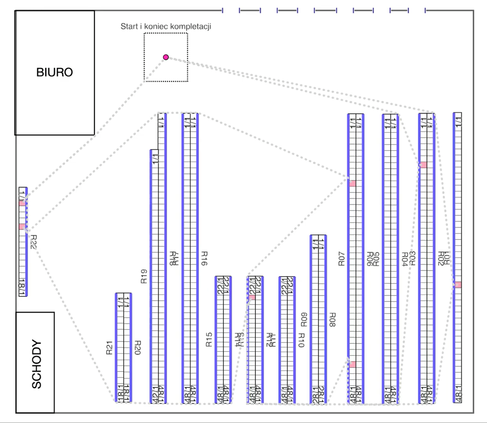
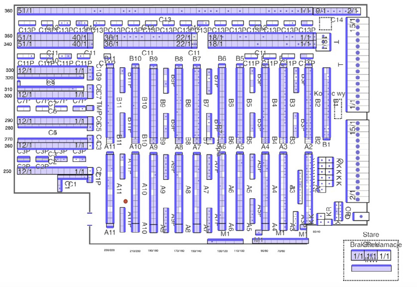
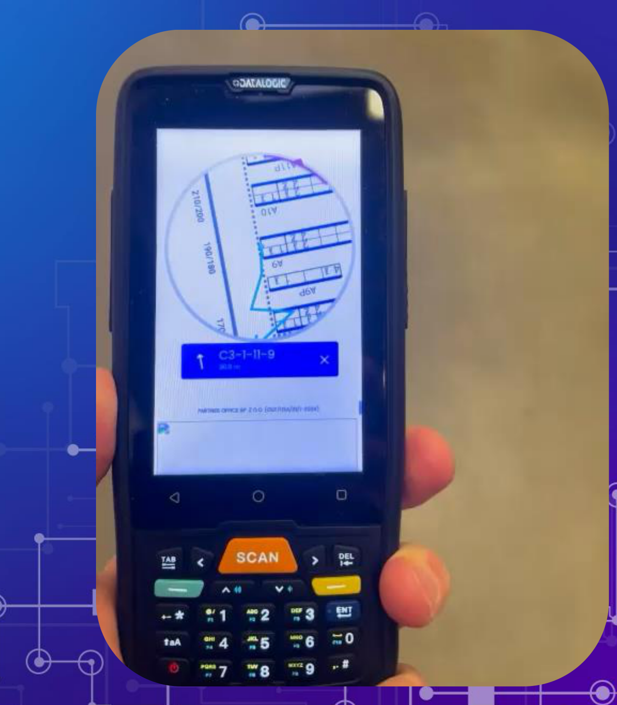
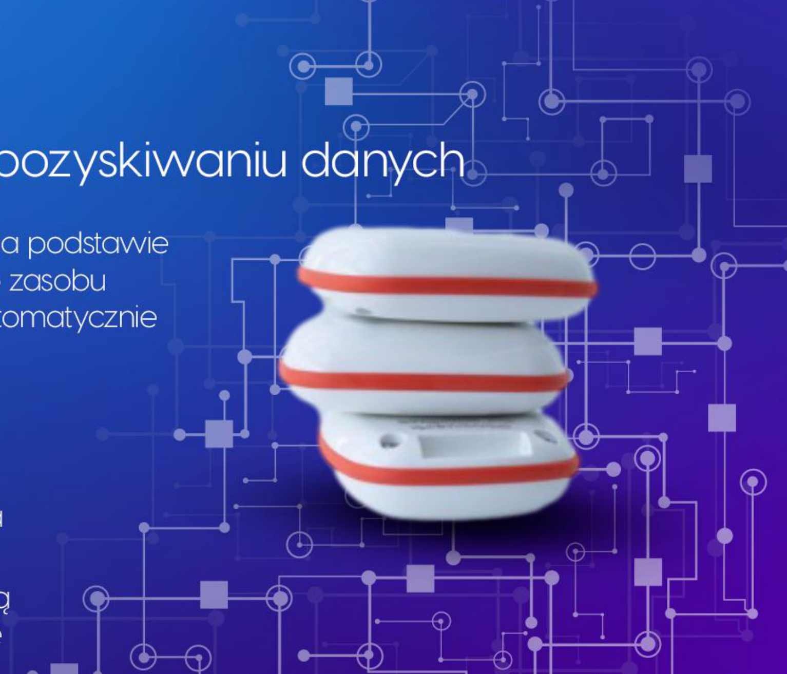
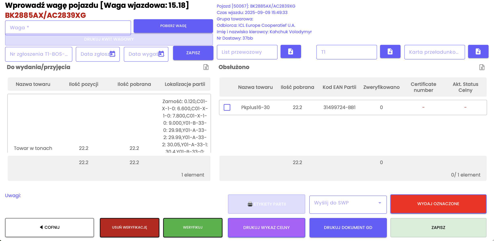
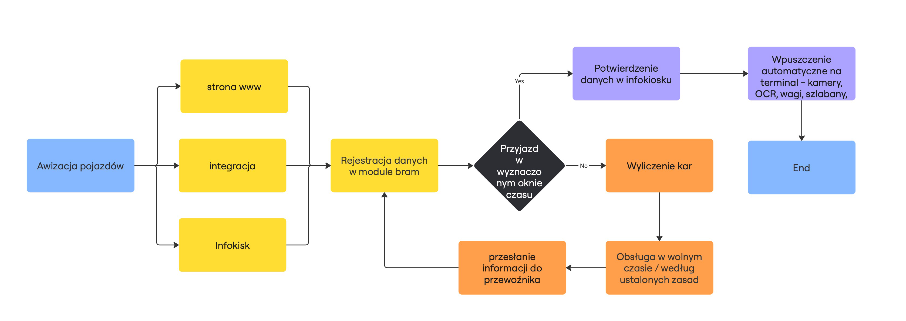
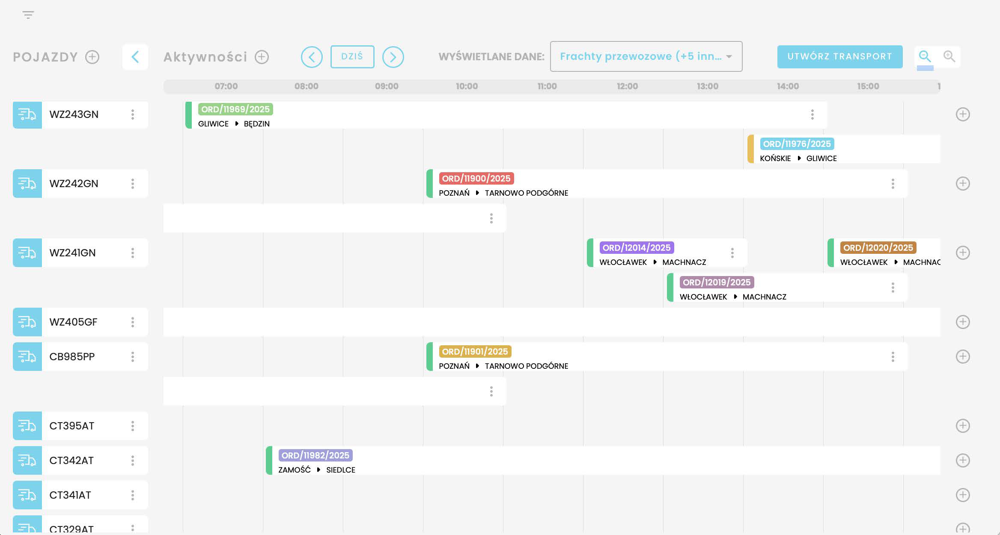
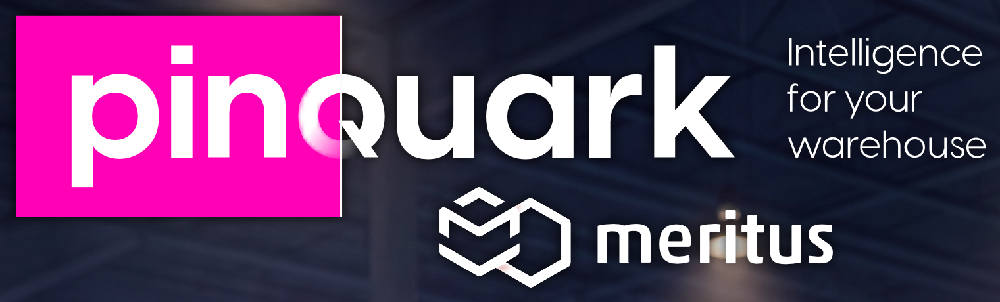

Chmurowy system Pinquark WMS sterowany przez sztuczną inteligencję (AI) oraz czujniki Ultra-Wideband (UWB). Bez wielomiesięcznych wdrożeń. Bez zakupu serwerów.
Błyskawiczne uruchomienie dzięki funkcji drag & drop i gotowym szablonom procesów.
Czynnościowe zarządzanie, dynamiczne wyznaczanie ścieżek i przewidywanie kolizji na żywo.
30+ lat doświadczenia na rynku IT i ponad 200 udanych wdrożeń w logistyce i przemyśle.
Przebudowaliśmy logikę tradycyjnych systemów WMS. Zamiast sztywnych procedur – pełna elastyczność i chmura.
Inteligentny magazyn w chmurze w 5 minut. Projektuj alejki, regały i strefy metodą drag & drop w przeglądarce.
Maksymalne wykorzystanie kubatury magazynu i redukcja kosztów operacyjnych nawet o połowę dzięki sztucznej inteligencji.
Skaluj biznes w modelu subskrypcyjnym (SaaS). Płać tylko za aktywnych użytkowników, bez barier wejścia i ukrytych opłat.
Koniec z wielotygodniowym oczekiwaniem na zmiany w systemie. Każdy ekran i proces modyfikujesz bezpośrednio w aplikacji.
Dostosuj układ przycisków, pól skanowania EAN/SSCC i widoków dla magazynierów w kilka chwil. Tylko to, co niezbędne na danym stanowisku.
Działa natychmiast na profesjonalnych kolektorach kodów (Zebra, Honeywell, Datalogic) oraz zwykłych smartfonach i tabletach wózkowych.


Ścieżki prowadzą wyłącznie korytarzami magazynowymi. Zobacz, jak algorytm AI omija zablokowane alejki i wózki widłowe.
Rewolucyjny moduł prowadzący magazynierów i wózki krok po kroku najszybszą i najbezpieczniejszą trasą pod właściwe gniazdo regałowe.
Cyfrowa mapa hali 2D/3D ze wskazówkami skrętu i dynamicznym podświetleniem regału docelowego na ekranie terminala.
Pracownicy tymczasowi i sezonowi realizują zadania od pierwszych minut bez konieczności mozolnej nauki topografii magazynu.
Zintegrowane ostrzeżenia świetlne i wibracyjne na terminalu przy zbliżeniu się wózka widłowego zza regału.

Precyzyjny system lokalizacji czasu rzeczywistego (RTLS). Odporny na zakłócenia w stalowych halach wysokiego składu.

Impulsy radiowe Ultra-Wideband (3.5 – 6.5 GHz) przenikają przez metalowe regały bez zjawiska echa wielodrożnego, eliminując błędy GPS i Bluetooth.
Pomiar czasu przelotu fali (Time of Flight) z multilateracją do 4 kotwic wyznacza pozycję obiektu w trzech wymiarach z centymetrową precyzją.
Generowanie map ciepła w czasie rzeczywistym. Pełna widoczność zatorów w korytarzach, przestojów i rzeczywistej roboczochłonności.
Kompleksowa automatyzacja ruchu pojazdów ciężarowych. Kamery OCR, samoobsługowe info-kioski i inteligentna rezerwacja okien czasowych.

Kamery OCR do natychmiastowego odczytu tablic rejestracyjnych i numerów kontenerów, automatyczne wagi wjazd/wyjazd oraz sterowanie szlabanami.

Wielojęzyczny interfejs dla kierowców TIR (PL, EN, UA, DE). Odprawa w 30 sekund kodem QR z SMS-a i automatyczne przydzielenie wolnej rampy.

Time Slot Booking dla przewoźników i spedytorów. Równomierne obciążenie ramp i magazynierów, całkowita eliminacja kolejek TIR przed bramą.
Pełna kontrola nad każdym etapem łańcucha dostaw — od awizacji towaru po wydanie kurierskie i synchronizację z systemami ERP.
Kontrola jakości, cross-docking, automatyczne generowanie etykiet logistycznych SSCC i weryfikacja braków/nadwyżek.
Algorytmy rotacji towarów ABC/XYZ, dynamiczne komasowanie palet i inteligentna optymalizacja kubatury magazynu.
Zbiórka wielu zamówień jednocześnie, algorytm plecakowy i najkrótsza ścieżka zbiórki wspierana przez Pinquark Navigator.
Kontrola wagowa paczek, automatyczne generowanie listów przewozowych kurierów i załadunek na środki transportu.
Klienci Pinquark notują natychmiastowe przyspieszenie operacji logistycznych i terminalowych bez powiększania załogi.
Wdrożenie WMS z algorytmem AI skróciło trasy kompletacji i obsłużyło rekordowy wzrost:
Automatyzacja terminala intermodalnego, bram, info-kiosków i nawigacji UWB na placu:
Stała, niska subskrypcja bez ukrytych kosztów: 249 PLN netto / użytkownik / miesiąc.
